Urban form and bird biodiversity
Cities are living systems where people, buildings, and nature interact, and birds are a good mirror of that balance. My doctoral research asks how the form of a city shapes its bird life, and why the answer differs so much from one city to another.

Cities shape bird life in more than one dimension
How much green a city has is only the starting point. Whether birds thrive depends on what kind of green it is, how it is arranged, and what the built environment around it does to them. Before adding new evidence, I audited what the field had already gathered, sorting every study by which urban component it measured, at what scale, and against which bird response.
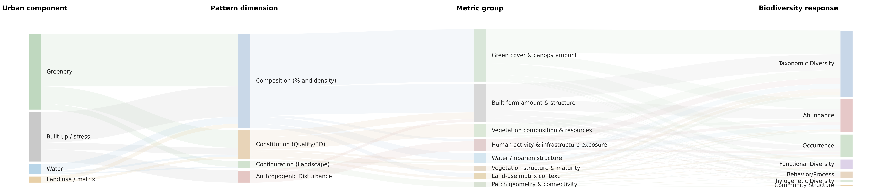
of all evidence is green space. Water is 7.5 percent, though its pooled association is no weaker.
is measured below 500 metres. Landscape and regional processes stay underrepresented.
counts species, individuals, or presence. Functional diversity is 5.6 percent.
measures an ecological process directly. Resource-access pathways are about 2 percent.
Low-hanging fruit: the field has accumulated the easiest evidence, not the most complete evidence.
What must an integrative evidence framework explain?
The Pattern-Process-Function framework links urban drivers to spatial pattern, ecological processes and biodiversity outcomes. It treats built-up, vegetation and water as interacting parts of one urban system rather than separate predictors.
- RQ1How do urban landscape patterns drive urban avian biodiversity under the PPF framework, and to what extent are effects mediated by functional guilds and modulated by contextual factors?
- RQ2What knowledge gaps, limitations and biases characterize the current evidence?
- RQ3How can future research build an integrative framework for biodiversity-sensitive design?
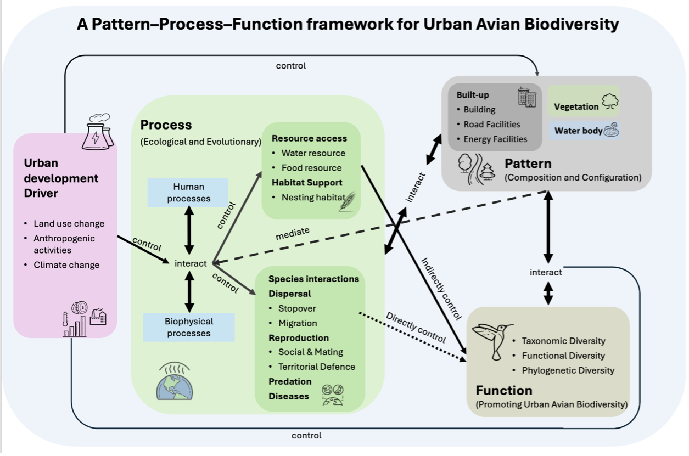
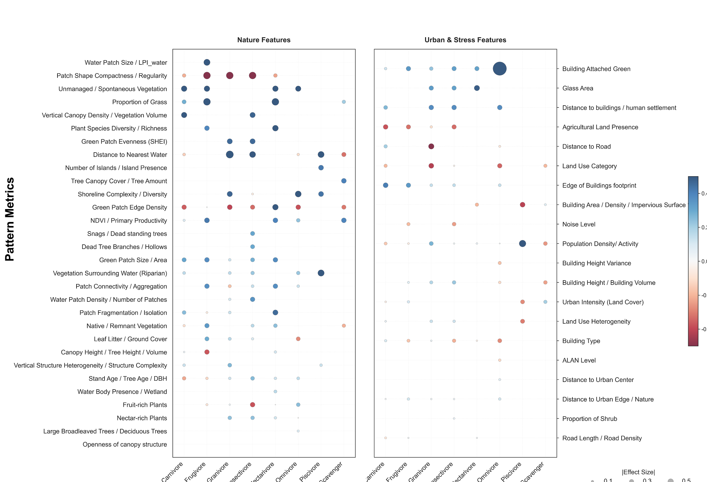
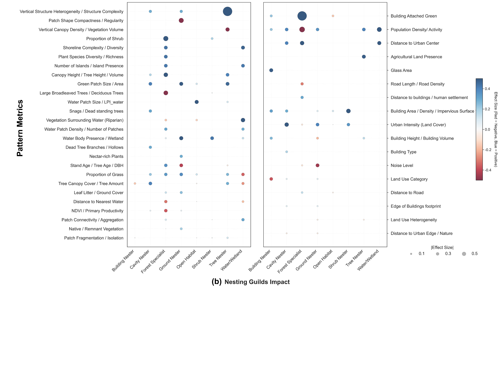
The signal comes from structure more than extent

Where green does help, the signal comes from its structure more than its extent. Taller and more varied canopies, standing deadwood, and how patches are aggregated matter more than coverage alone.
The same feature can also act through different ecological processes, so its effect is not fixed. Tree canopy, for instance, supports resource access and reproduction, and helps dispersal even more.
Reading green in three dimensions and across its spatial pattern, and looking at the processes behind it, is what sustains diversity over the long run, in species, in function, and in evolutionary history.
Taken together, these findings argue for a multidimensional reading of urban biodiversity. Green amount sets the baseline, built form filters who can stay, and the structure and arrangement of green decide how much life a city can hold.
A spatial unit is an analytical choice, not a neutral container
The same bird records can be read through fixed grids, form-following Local Climate Zones, or buffers around sightings. Each representation changes which part of the city is measured and what kind of biodiversity response can be modelled.
- RQ1How do spatial units shape the measurement of urban pattern?
- RQ2To what extent do spatial units alter the predictors that emerge as important for avian biodiversity, and are these shifts guild-dependent?
- RQ3How do scale dependence and model robustness vary across spatial representations?
- RQ4Do different spatial units reveal different ecological transitions and morphology-linked biodiversity gradients?
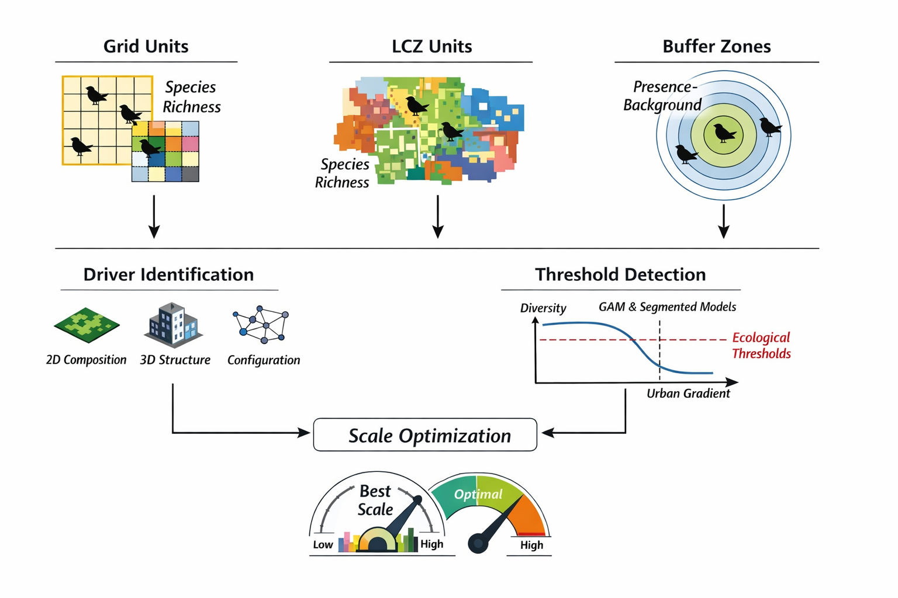
Different birds live at different scales
Studying how urban pattern affects birds depends on two choices that are easy to overlook. One is scale, the distance at which each bird group responds to its surroundings. The other is spatial representation, the kind of unit we use to read the city. That unit can be geometric, like a buffer or a grid, or it can follow urban form, like morphological zones.
Because a bird record is only a point, we always have to draw some unit around it to measure pattern, and whether that unit is geometric or morphology-based shapes how we read the link between pattern and biodiversity.
When we measured the environment around each bird record, guilds reached their strongest response at very different distances. Granivores and piscivores responded most at fine scales, around 250 metres. Carnivores and omnivores needed much wider surroundings, up to 2000 to 2500 metres. Frugivores and insectivores sat in between.
Each guild effectively senses the city at the size of its own living range.
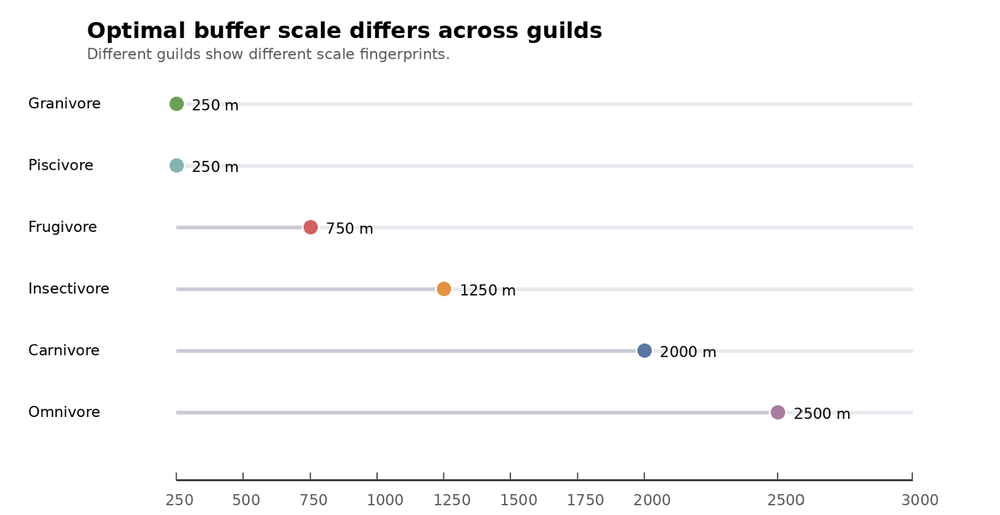
Do fruit-eating birds do better where trees are taller?
Same city, same records, same guild. What changes is the unit the city is divided into, and with it the response the model can express. In every panel the horizontal axis is canopy height in metres and the shaded band is the 95 percent confidence interval. What the vertical axis counts is not the same in all three, and that is the point.
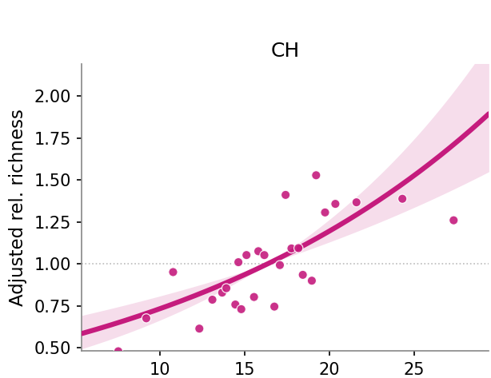
Equal squares, each asked how many fruit-eating species it holds. The vertical axis is predicted richness per square, and the curve is still climbing at the tallest squares. Read alone it says: keep growing trees taller.
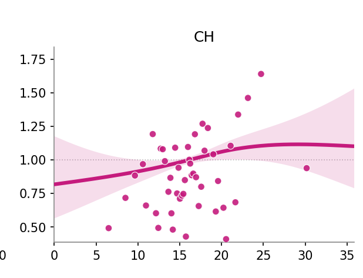
Cut along real built character, so a low-rise neighbourhood and a tower district are never averaged together. Predicted richness per zone flattens above roughly twenty-five metres. Taller still helps, with diminishing returns.
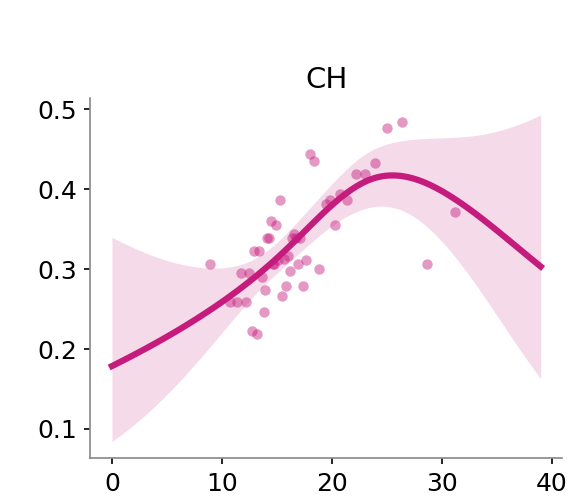
The question changes: a circle around each sighting, and the model asks how likely fruit-eaters are to appear at all. The dashed line marks the peak, near twenty-five metres, after which likelihood falls. An optimum, not a maximum.
One dataset, three readings
The evidence base stays constant. The spatial representation changes what is summarized, so it changes the functional form a model can recover.
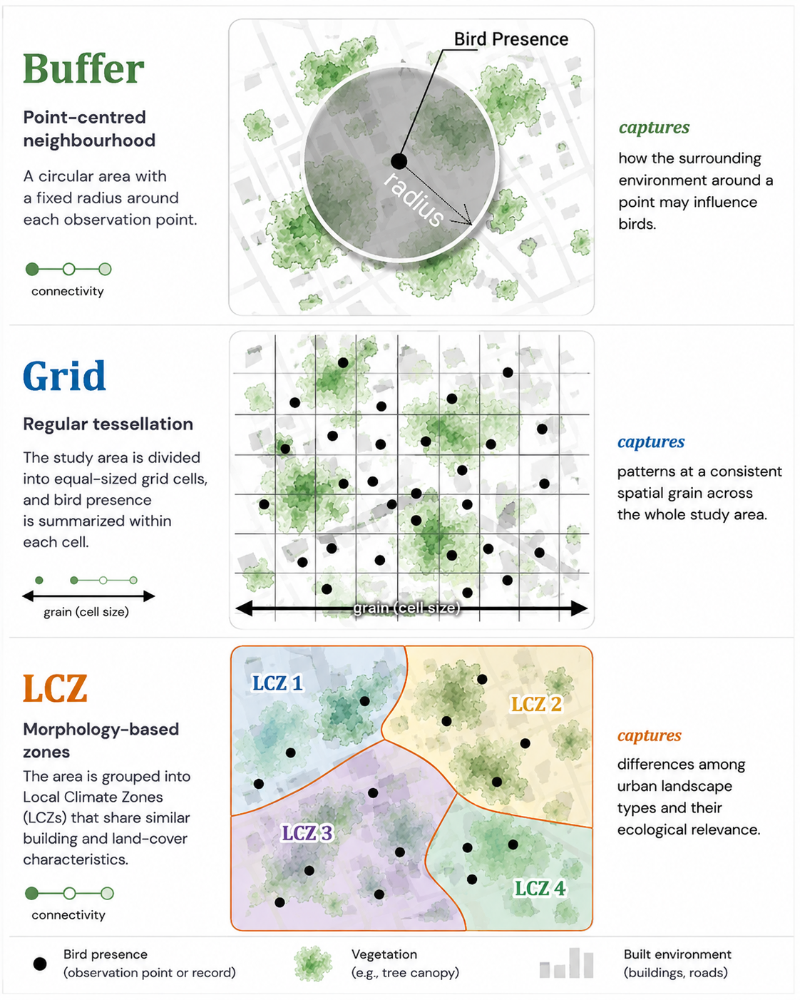
Keep evidence fixed
Singapore citizen-science records and high-resolution pattern data enter every comparison, with sampling effort carried as an offset.
Let the unit define the response
Buffers estimate guild occurrence against generated background records; grids and Local Climate Zones estimate richness per spatial unit.
Compare like with like
Smooth models use the same predictor logic and spatial controls, then pass fivefold validation, fit and residual checks before their curves are interpreted.
Top predictors by feeding guild under each spatial representation. View full size
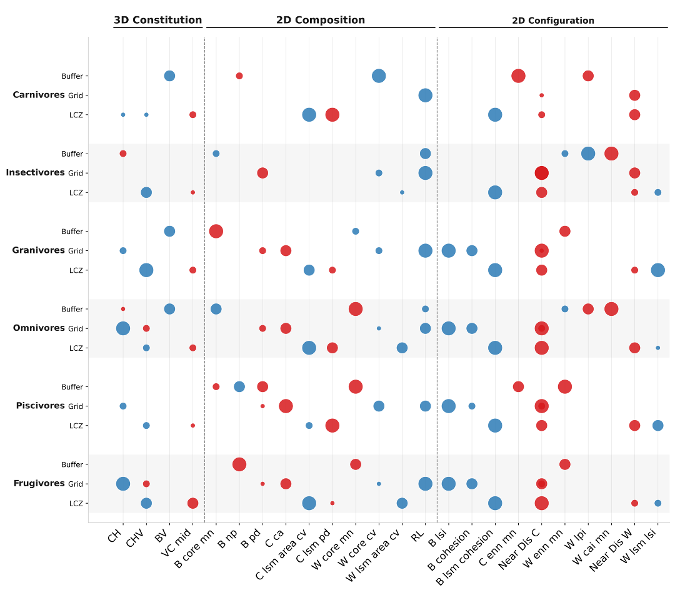
Match the unit to the question
Across all three representations, accessibility to canopy and water remained important; the different units mainly changed which other patterns became visible.
Report the unit with the result: each representation measures a different, valid aspect of the same city.
The 2 km grid carries a tested representation into global comparison
Study two showed that spatial representation changes what is measurable and which relationships emerge. For cross-city comparison, a shared 2 km by 2 km grid keeps cell area and geometric rules constant across every city.
The 2 km grain was retained from the scale-sensitivity tests because it balanced fine-scale noise reduction, predictive generalizability and stable model convergence. It also aggregates uneven citizen-science reporting sufficiently for grid-cell species-richness models.
The grid is not neutral. Here it is a deliberate common denominator that makes 68 cities comparable.
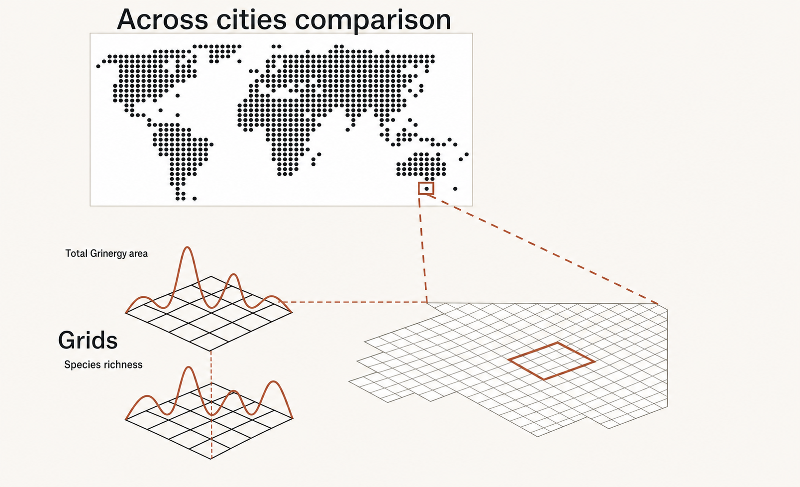
Which urban patterns travel across cities, and which depend on context?
Using the standardized 2 km grid, Study three separates local pattern-bird relationships from the broader ecological and urban contexts that may modify them.
- RQ1 · universal versus city-specific driversWhich local landscape metrics are consistently associated with grid-cell bird richness, and how much do direction and magnitude vary among cities?
- RQ2 · added value of vertical structureDoes three-dimensional urban morphology improve explanation beyond two-dimensional pattern metrics alone?
- RQ3 · context dependenceCan cross-city variation be explained by regional ecological context, urban spatial structure and urban development context?
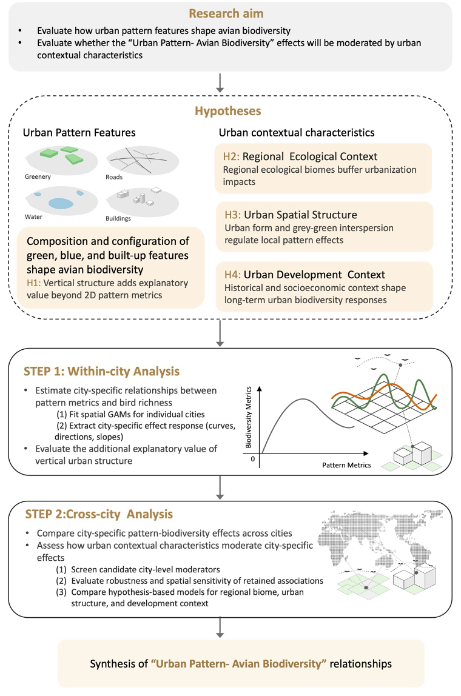
68 cities, one comparable sampling frame
Cities were retained for broad coverage of climate, biome, geography and development context, while meeting an 80 percent bird-record completeness threshold for grid-level modelling.
The sample spans Europe (25 cities), Asia (15), Northern America (10), Latin America and the Caribbean (10), Oceania (5), and Africa (3).
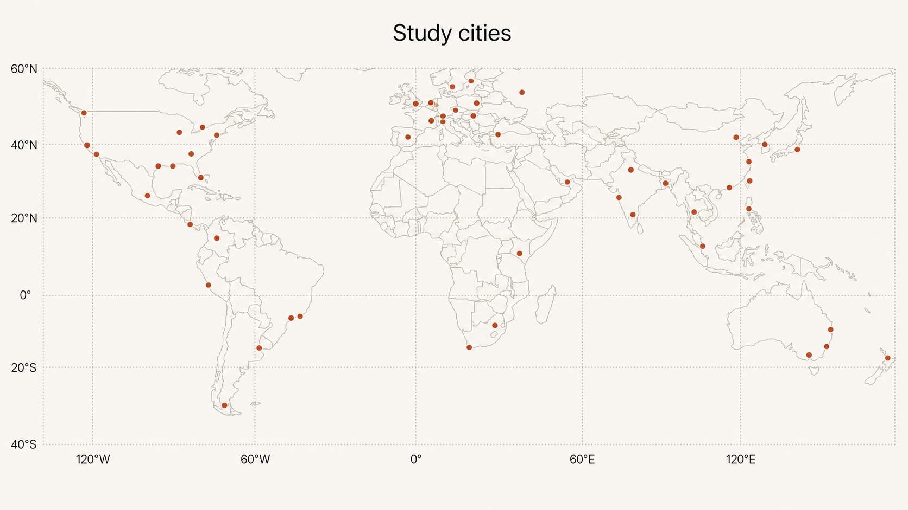
The same ingredients, arranged differently in every city
Once every city is measured the same way, a sharper question comes into view. Which links between urban form and bird life hold everywhere, and which depend on where the city is? Across sixty-eight cities placed on equal footing, a handful of features mattered almost everywhere. What differed was how they combined, which was rarely the same from one city to the next.
A small number of features carried most of the signal: canopy height and cover, building height and footprint, and how close water is. Their presence was consistent, but their behaviour was not.
Canopy height is a good example. It did not help birds everywhere. In some cities taller canopy went with more bird species, in others with fewer, so its effect changed from one place to another rather than pointing the same way across the world.
A feature that supported birds in one city could work against them in another.
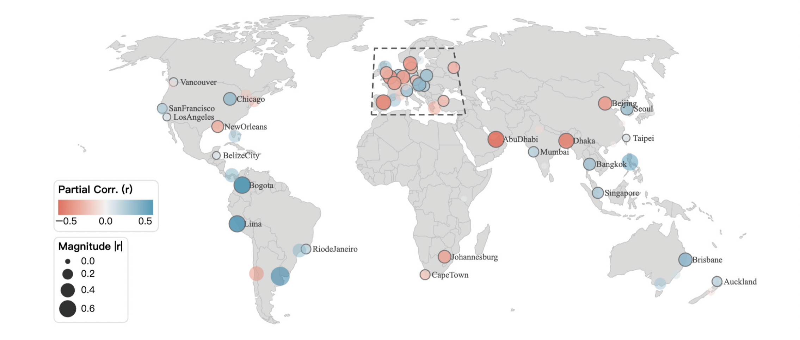
A pattern that looks good in one region cannot be assumed to behave the same way in another
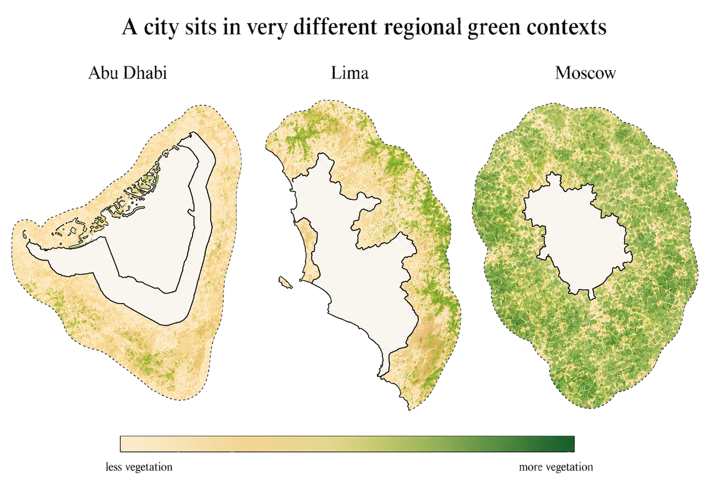
Some of this variation was not noise. It followed the wider setting each city sits in. How a city's internal pattern reads for birds depends in part on the regional context around it, not only on what happens inside its boundary. A pattern that looks good in one region cannot be assumed to behave the same way in another.
For comparison across cities to mean anything, we cannot fall back on a single universal rule. The drivers recur, but how they act is context-dependent. Reading a city's bird life well means reading it together with the landscape it sits in.
Urban bird diversity is multidimensional, nonlinear, and context-dependent, not a function of green area
Habitat quality and structural complexity, particularly vertical vegetation structure, plant diversity, and mature or remnant habitat, exert stronger and more consistent effects than habitat area alone. Built environments are not background disturbance but active ecological filters, excluding sensitive species while favouring more adaptable guilds.
This supports biodiversity-sensitive planning that moves past planar greening targets, and it points to what urban ecology still needs: three-dimensional metrics, organism-centred scale, matrix interactions, and cities outside the temperate Northern Hemisphere.